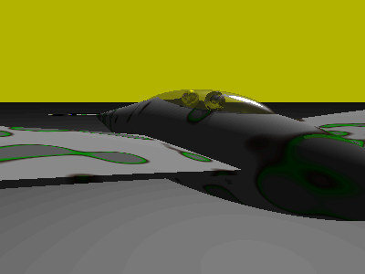
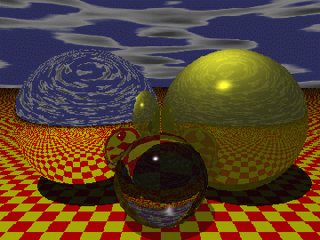

![[LinuxFocus Image]](../../common/March1998/border-short.jpg)
| Noticias Archivos Compañías Consejos |
Comenzando con Povraypor Antonio Castro |
Introducción
Algunas Caracteristicas de Povray
Obtener Povray
Instalación
Configuración
POV
|
Este artículo inicia una serie sobre el trazador de rayos Povray. El propósito de este primero es facilitar su uso a principiantes en Linux. Persistence of Vision Ray-Tracer (POV-Ray) Copyright 1996 POV-Team. IntroducciónPovray (Persistence of Vision Raytracer) es básicamente un trazador de rayos. No resulta facil explicar lo que significa este término sin entrar en ciertos detalles pero dejaremos para más adelante (en posteriores artículos) la explicación detallada de qué es un trazador de rayos. Ahora nos limitaremos a esbozar el concepto de trazado de rayos. El trazado de rayos es una técnica para representar escenas imaginarias definidas en el ordenador mediante el uso de unos modelos, en los que se establecen los objetos y sus formas, así como puntos de luz y una cámara. La forma en que el ordenador intenta obtener una imagen lo más realista posible es siempre el resultado de obtener la mejor imagen con el menor coste de cálculo posible.Cuando se puede, se intenta imitar a la naturaleza y otras veces solo se busca un efecto parecido. Sin estos atajos sería imposible obtener una imagen en un tiempo razonable. El ordenador deberá calcular una gran cantidad de trayectorias de rayos, pero no lo hace de la misma forma que ocurre en la naturaleza. En ésta los rayos salen de la fuente de luz principal y cada vez que inciden en un punto de una superficie se genera una fuente de luz secundaria y termina incidiendo en la retina del espectador o en la película de una cámara. Daremos ahora solo un detalle como anticipo. En un trazador de rayos estos viajan en sentido contrario. desde un punto de la retina o película de la cámara hacia los objetos primero y por último llegan a la fuente de luz. Dejaremos la explicación detallada de este y otros aspectos para el artículo siguiente. La calidad del trazador de rayos Povray es excelente y no tiene nada que envidiar a la de muchos productos comerciales. Los productos comerciales de diseño basados en trazado de rayos suelen venir integrados con una serie de herramientas para diseñar cómodamente toda clase de objetos. En el caso de Povray se pueden usar modeladores de diferentes casas independientes o traductores de formatos, y en general una gran variedad de herramientas. Eso no significa que no sea posible lograr un diseño bonito incluso espectacular exclusivamente con Povray. Para ello hace falta sobre todo una gran dosis de imaginación. Por añadidura los fuentes son públicos lo que nos
permite investigar las técnicas utilizadas.
El manual de Povray está disponible en su versión de texto (ideal para búsquedas rápidas), en formato HTML, y en formato postscript. Si tiene intención de imprimir el documento postcript prepare unas 600 hojas más o menos; la razón de ello es que las posibilidades de Povray son enormes, pero no se asuste. Este artículo le permitirá probar Povray y en artículos posteriores se expondrán los conceptos básicos. Lo cierto es que Povray nos permite hacer una incursión en el mundo de la infografía por la puerta grande, debido a sus increíbles capacidades técnicas. Según mi propia concepción de la infografía el dominio de la técnica nos puede acercar a la obtención de imágenes con un grado de realismo increíble, pero el valor artístico de una imagen no tiene nada que ver ni con el realismo ni con la técnica. La técnica es una valiosa ayuda pero todo lo que realmente tiene valor artístico tiene que ser concebido previamente en nuestra cabeza. La idea es lo que cuenta. Muchas veces me gusta jugar con los conceptos de realismo e
irrealidad. la infografía se presta a este juego de una y mil
formas distintas provocando un estimulante conflicto en el
espectador. http://slug.ctv.es/~acastro/infograf/catalog.htm Tengo un diseño de un híbrido entre avión tipo velero y una gaviota.
En esta primera imagen podemos ver su gran parecido con una gaviota.
 En esta segunda perspectiva se diría que es un avión, y sin embargo se trata del mismo objeto. La silueta es la de una gaviota. Tiene en la parte superior una cabina transparente donde se aprecian dos pilotos. La pigmentación es extraña pero gracias al trazado de rayos estas imágenes obtienen un grado de realismo notable. Cuando estas imágenes se muestran a los ojos de un niño de unos cinco años y le preguntamos su opinión dirá que es una foto, no un dibujo. En cambio mostradas a un adulto tendrá cierta dificultad en clasificarla. Dirá claramente que no es un dibujo, dirá claramente que no es una foto. Sabrá quizás que se ha obtenido con un ordenador, pero cómo ha conseguido el ordenador este extraño y bello resultado? En mi opinión este tipo de resultado es el que interesa conseguir en los diseños. Imágenes desconcertantes donde lo sintético y lo artificial se armonizan con diversos efectos tremendamente realistas. Para ello resulta imprescindible una gran dosis de imaginación
y un cierto dominio de la técnica.
He pasado muy buenos ratos con Povray y estoy seguro de que todo aquel que se anime disfrutará con ello.. Algunas de las características más destacadas de Povray
Donde se puede obtener PovrayPovray puede ser obtenido por ftp.El lugar oficial para su obtención es el siguiente. http://www.povray.org
Existe una revista electrónica dedicada a povray aunque parece abandonada conserva algunos números muy buenos que aparecieron por la misma epoca que la versión 3.0 de Povray . PovZine http://www.povray.org/pub/povray/ezine
Existen muchos MIRRORS pero ninguno tiene carácter oficial.
Contenido: (15-Enero-1998) ftp.povray.org Para que se pueda hacer una idea de lo que hay en el sitio oficial se
ofrece un extracto.
Este último no es imprescindible pero aquí obtemdremos lo que no podemos encontrar en el fabuloso manual de Povray. El manual de Povray es muy bueno pero siempre se ha dicho que una imagen vale más que mil palabras. Por una parte dicho manual no está ilustrado en la medida necesaria. Por otra parte aquí podemos encontrar una gran cantidad de imagenes que son el complemento ideal para el manual. No quiero decir que el manual no tenga ejemplos, al contrario tiene muchos. Cada uno ilustra un concepto, lo cual está muy bien para adquirir técnica. Algunos ejemplos son bellísimos, pero en 'Hall-Of-Fame' estamos hablando de una selección de imágenes muy buenas: un auténtico museo de arte infográfico. A cada imagen se acompaña un texto explicativo donde se explican las herramientas y las técnicas empleadas para conseguir tan increíbles resultados. Hay que advertir que muchas de las herramientas que se mencionan como modeladores, conversores, etc. con frecuencia no se encuentran disponibles todavía para su uso desde Linux. Podemos destacar por lo tanto ftp.povray.org/pub/povray/Official-3.0/Linux También se recomienda bajar ftp.povray.org/pub/povray/Hall-Of-Fame no solo para disfrute visual sino como importante fuente de inspiración creativa. Mostraremos la instalación típica que en principio tendría
que funcionar en cualquier tipo de Linux aunque solo ha sido probada completamente
en Debian.
InstalaciónComo es normal en las instalaciones, entramos en el sistema como super usuario (root).Vamos a suponer que ya tenemos los ficheros en nuestro sistema en el directorio "/incoming/pub/povray/Official-3.0/Linux" A continuación tecleamos los siguientes comandos.
Unicamente asegurese de que tiene permiso de ejecución para todo el mundo para cada uno de los directorios de la cadena /usr/local/apli/povray/povray3 y para los ejecutables x-povray y s-povray. En nuestro caso, durante la instalacón necesitamos cambiar algunos de estos permisos con 'chmod 755 (directorio o fichero)'. ConfiguraciónLa configuración de Povray sirve para que la librería de ficheros "includes" sea accesible, para que la tarjeta gráfica sea reconocida, para establecer el formato de los ficheros de salida y muchas cuestiones más.Creo que en lugar de explicar cosas que están muy bien explicadas en el manual (Quick start) será mejor que tomemos una configuracíon muy genérica y que permita a la mayoría de los usuarios de Linux usar Povray de una forma fácil, cómoda e inmediata. Povray puede visualizar en SVGA pero esto nos obligaría a comentar un tema que depende de cada tarjeta. Por ejemplo vamos a suponer que en su equipo tiene instaladas las Xwindows y como visualizador de imágenes usaremos 'xv'. La configuración para poder trabajar en Linux con las nuevas versiones de 'povray' puede simplificarse al máximo. Se pueden usar variables de entorno pero resulta más práctico generar un fichero de configuración *.ini con todo lo necesario. Existen varios ficheros *.ini proporcionados a modo de ejemplo para propósitos generales.Esto da lugar a diversas posibilidades para establecer la configuración. Se puede referenciar en una variable de entorno nuestro fichero de configuración por defecto, o se pueden usar variables para localizar la librería de includes por defecto, etc.; también se pueden pasar como argumentos un montón de opciones pero nosotros lo pasaremos casi todo en un fichero de configuración *.ini que a su vez pasaremos como argumento en la linea de comandos. Si no le convence este sistema consulte el manual y verá que hay varias posibilidades para alcanzar el mismo resultado, pero no es cuestión en un artículo como este de mencionar todas las posibilidades sino una sola que sea lo más útil posible. Existe también una shell de utilidad para generar las imágenes correspondientes a todos los ejemplos 'allscene.sh'. Seguramente en lugar de generar la totalidad de las escenas con una resolución pobre preferirá elegir alguna y renderizarla con mayor resolución. En este caso situese en el directorio del ejemplo y lance povray usando el fichero 'ini' siguiente: -------------------------8<------------(ini.ini)---------------- Width=640 Height=480 Quality=8 Library_Path=/usr/local/apli/povray/povray3/include Output_to_File=on Output_File_Type=t Output_File_Name=out.tga verbose=on -------------------------8<--------------------------------------Las dos primeras lineas determinaran la resolución de la imagen final. El comando para obtener la imagen sería: $ s-povray ini.ini +i fuente.pov El fichero 'fuente.pov' será el nombre del fichero que deseamos procesar. Obtendremos una imagen 'out.tga' que podremos luego ver con 'xv out.tga' por ejemplo. POV: una utilidad para trabajar con Povray'pov' es una shell-script para trabajar cómodamente. En primer lugar mostramos su listado:------------------------8<-----------------------------------
#!/bin/bash
#####################################################################
# Autor: Antonio Castro Snurmacher (1.998)
#
# pov (ver 1.0)
#
# Esta versión esta dedicada a su inclusión en la
# revista LinuxFocus (freeware)
#
# Este programa puede ser utilizado, distribuido, y modificado
# libremente pero siempre se deberá respetar la propiedad
# intelectual de su autor. Esta cabecera debe ser conservada
# tal cual en todas las modificaciones.
#
# En caso de traducción deberá conservarse el texto original de
# esta cabecera y añadirse la traducción a continuación de ella.
#
# El autor renuncia a todo tipo de beneficio económico y no se hace
# responsable de los posibles perjuicios derivados del uso del mismo.
#
# E-mail (acastro@ctv.es)
#
#####################################################################
uso(){
echo "Uso: pov (proyect) (size=0..6) (quality=1..11)"
echo
echo "0) 40x30 (STD/20) No backup"
echo "1) 80x60 (STD/10) No backup"
echo "2) 100x75 (STD/8) No backup"
echo "3) 200x150 (STD/4)"
echo "4) 266x200 (STD/3)"
echo "5) 320x200 *"
echo "6) 400x300 (STD/2)"
echo "7) 640x480 *"
echo "8) 800x600 * (STD)"
echo "9) 1024x768 *"
echo
echo "Los proyectos deben situarse en un directorio situado en"
echo "${HOMEPOV} y se usará el mismo nombre para el directorio"
echo "que para el fichero fuente principal *.pov"
echo "(STD) es la resolución elegida como referencia estandar."
echo
exit 1
}
newversion(){
mv ${PREFIX}.pov.8.gz ${PREFIX}.pov.9.gz 2> /dev/null
mv ${PREFIX}.pov.7.gz ${PREFIX}.pov.8.gz 2> /dev/null
mv ${PREFIX}.pov.6.gz ${PREFIX}.pov.7.gz 2> /dev/null
mv ${PREFIX}.pov.5.gz ${PREFIX}.pov.6.gz 2> /dev/null
mv ${PREFIX}.pov.4.gz ${PREFIX}.pov.5.gz 2> /dev/null
mv ${PREFIX}.pov.3 ${PREFIX}.pov.4 2> /dev/null
mv ${PREFIX}.pov.2 ${PREFIX}.pov.3 2> /dev/null
mv ${PREFIX}.pov.1 ${PREFIX}.pov.2 2> /dev/null
cp ${PREFIX}.pov ${PREFIX}.pov.1
gzip ${PREFIX}.pov.4 2> /dev/null
}
#################################################
size(){
export SAVE="yes"
case $1 in
0) Width=40 ; Height=30; SAVE="no" ;;
1) Width=80 ; Height=60 SAVE="no" ;;
2) Width=100; Height=75 SAVE="no" ;;
3) Width=200; Height=150;;
4) Width=266; Height=200;;
5) Width=320; Height=200;;
6) Width=400 ;Height=300;;
7) Width=640 ;Height=480;;
8) Width=800 ;Height=600;;
9) Width=1024;Height=768;;
*) uso
esac
}
quality(){
case $1 in
1) ;;
2) ;;
3) ;;
4) ;;
5) ;;
6) ;;
7) ;;
8) ;;
9) ;;
10) ;;
11) ;;
*) uso
esac
export Quality=$1
}
####################### main ##############################
export HOMEPOV=${HOME}/dat/pov
export PROYECT=$1
export PREFIX=${HOMEPOV}/${PROYECT}/${PROYECT}
if [ $# != 3 ]
then uso
fi
export POVRAY=/usr/local/apli/povray/povray3
size $2
quality $3
if [ $SAVE == "yes" ]
then newversion
fi
cat <<-FIN > ${PREFIX}.ini
Width=$Width
Height=$Height
Quality=$Quality
Library_Path=${POVRAY}/include
Input_File_Name=${PREFIX}.pov
Output_to_File=on
Output_File_Type=t
Output_File_Name=${PREFIX}.tga
verbose=on
Post_Scene_Command=xv ${PREFIX}.tga
FIN
# Output_File_Type=t
## Others hight performace options ##
# Antialias_Depth=3
# Antialias=On
# Antialias_Threshold=0.1
# Jitter_Amount=0.5
# Jitter=On
# Baja prioridad por si quiero hacer otras cosas.
nice -20 x-povray ${PREFIX}.ini
if [ $SAVE != "yes" ]
then echo "!! Atención !! No se generó backup de esta versión."
fi
------------------------8<-----------------------------------
Cuando estamos diseñando hay que probar muchas veces, para poco
a poco acercarnos al resultado deseado.
Para simplificar la ejecución vamos a implementar un shell-script que genere un fichero *.ini, lance el trazador Povray y luego visualice el resultado. Se asume que se va a trabajar en un directorio del tipo $HOME/dat/pov/(nombre-proyecto) y que el nombre del fichero principal será (nombre-proyecto).pov Esta shell genera ficheros *.ini que prácticamente son suficientes en la inmensa mayoría de los casos. Además está orientado a una forma de trabajar concreta, pero si no le convence esta forma de trabajar es fácil de modificar. Esta utilidad establece además un sistema que preserva los últimos cambios en ficheros fuentes porque con frecuencia ocurre que después de varios cambios persiguiendo un resultado deseamos volver a una versión anterior para continuar por otro camino. Como hemos dicho antes, el proceso creativo es como ir dando pinceladas y decidiendo poco a poco como continuar. Si lanzamos el programa con las resoluciones más bajas no se produce desplazamiento de versiones ni backup: se considera que es una prueba sin interés. Este tipo de pruebas se hacen para obtener rápidamente una idea que determine si las posiciones a grandes rasgos de los objetos parecen estar bien. Todo esto se puede cambiar pero a mí me resulta personalmente útil trabajar de esta manera. Para obtener una breve ayuda teclee 'pov' sin argumentos. Algunas de las resoluciones disponibles coinciden con modos estandar de algunas resoluciones de video. Otras son fracciones de la resolución 800x600. Si no tiene costumbre de trabajar con Povray le servirá como metodología inicial de trabajo. Posteriormente es probable que desee adaptar esta herramienta a sus necesidades particulares. Cree la estructura de directorios adecuados para poder trabajar con ella dentro de su directorio $HOME y verá qué sencillo le resulta empezar haciendo cosas desde el primero día. Nosotros basaremos los ejercicios en el uso de esta herramienta. Aunque no es necesario usarla, le resultará más comodo. Empezaremos con un ejemplo sencillo para comprobar que todo funciona: ------------------------8<-----------------------------------
#include "colors.inc"
#include "textures.inc"
#include "glass.inc"
// Autor: Antonio Castro
// La camara mirara al punto de contacto
// de ambas esferas
camera {
location <0, 15, 35>
look_at <0, 10, 0>
}
// Fuente de luz blanca
object {
light_source {
<20, 100, 50>
color White
}
}
// Cielo con nubes blancas
object {
sphere { <0, 0, 0> 200000} // Boveda celeste de gran tamaño
texture {Blue_Sky scale <50000, 6000, 50000>} // Estiramos las nubes
}
// Bola de oro
sphere { <-10, 10, 0> 10
texture { Gold_Metal }
}
// Bola de espejo
sphere { <10, 10, 0> 10
texture { Mirror }
}
// Bola de cristal
sphere { <0, 5, 10> 5
texture { T_Glass1 }
}
// Suelo
// Esta realizado con una gran esfera que toca el centro <0,0,0>
// pero se podía haber realizado con un plano.
sphere {<0, -1000000, 0> 1000000
pigment {checker color Red color Yellow scale 2 } // Textura ajedrez
}
------------------------8<-----------------------------------
Copielo en $HOME/dat/pov/sample1/sample1.pov
Si es necesario cree primero la estructura de directorios correcta. Luego use la utilidad 'pov' que se proporciona en este artículo, lanzándola desde una sesion xterminal de Xwindows con su usuario. $ pov sample1 4 9 Deberá tener disponible 'xv' para visualizarlo, esta forma de
trabajar le resultará muy cómoda. Cuando quiera realizar
sus propias escenas le recomendamos que tenga otra ventana 'xterm' con
la versión de texto del manual cargada por ejemplo con vi en modo
solo lectura para buscar rápidamente las palabras clave del lenguaje
y así poder consultar rápidamente su sintaxis, con algún
ejemplo de utilización.
 |

Fuentes de los programas de este artículo (2141 bytes)
Artículo original en Castellano
Páginas web mantenidas por Miguel A Sepulveda.